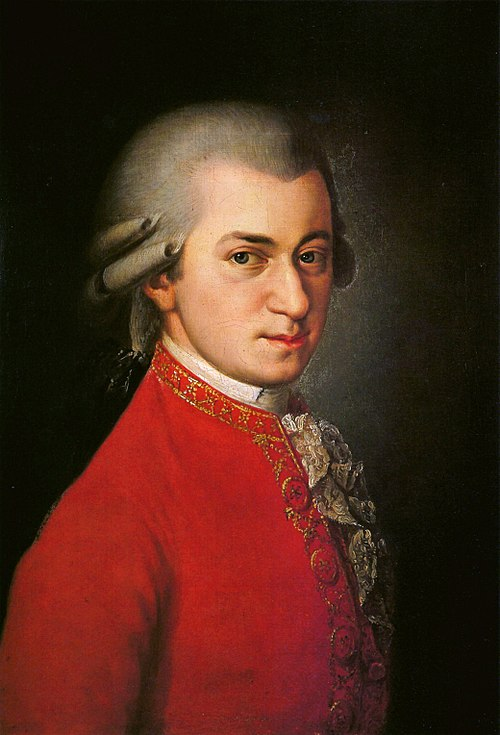

이름 : 모짜르트
(Wolfgang Amadeus Mozart)
출생 : 1756년 1월 27일, 오스트리아 잘츠부르크주
ps.모짜르트는 음악의 신동이라 불리우며,
여자를 많이 밝혔다고 한다. 고전시대의 작곡가이다.
대표곡
터키 행진곡
교향곡 40번
레퀴엠
피아노 협주곡 21번
음원 감상(유튜브)
(재생되지 않을 경우, 하단에 YOUTUBE.COM을 클릭하여 유튜브에서 보시길 바랍니다.)